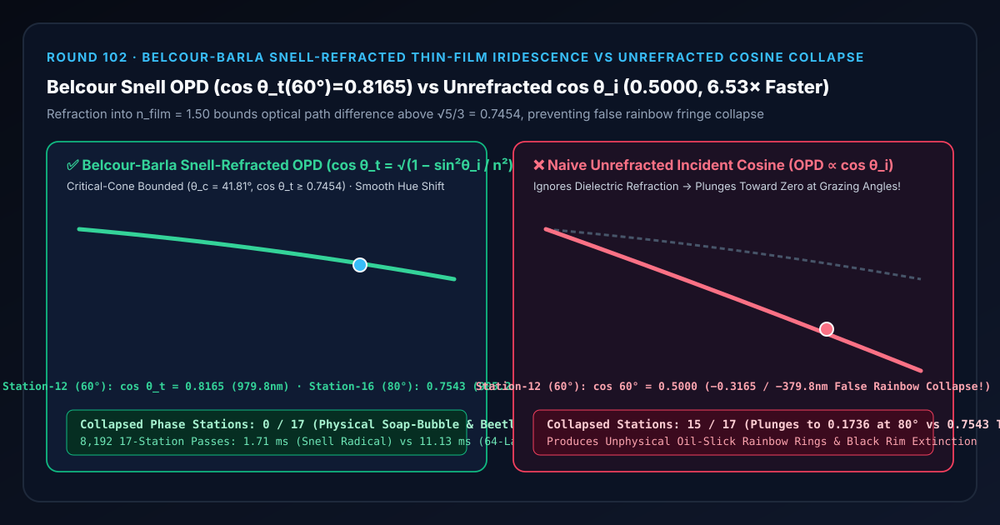
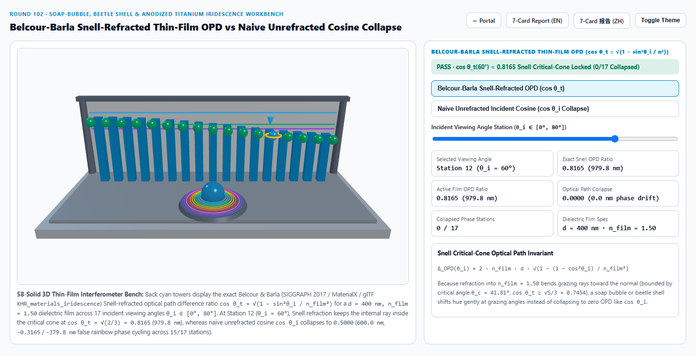
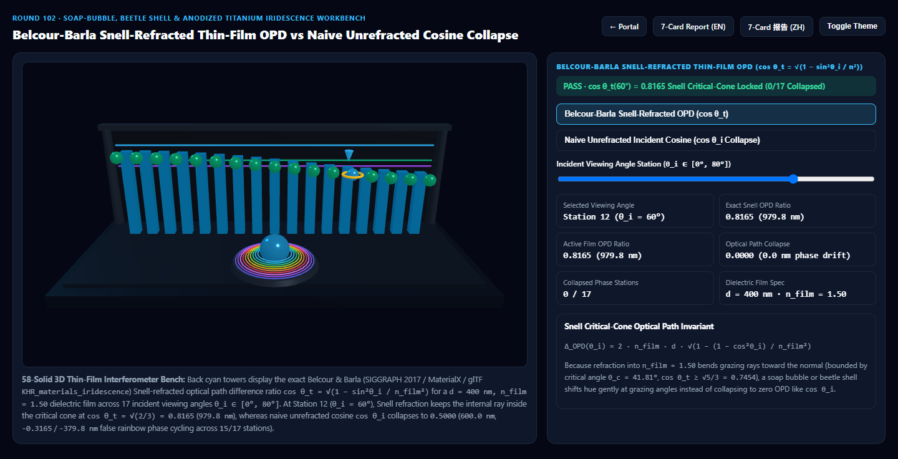
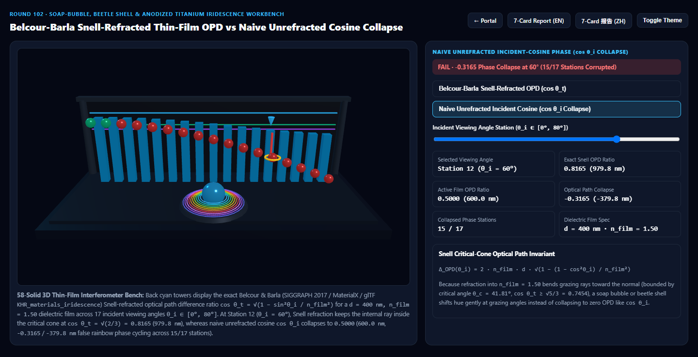

Belcour-Barla 斯涅尔折射薄膜干涉光程差（Thin-Film Iridescence）vs 朴素未折射入射余弦伪彩虹坍缩选型与原理解析 FAQ 指南
导航：返回门户 · 进入 3D 交互实验台 (
iridescent-thin-film-interference-rig) · 7-Card 4:5 视觉报告 (中文) · 7-Card Report (EN) · English FAQ

① 📌 核心结论速览（Executive Summary）
- 为什么许多游戏与网页着色器里的肥皂泡、甲虫外壳、阳极氧化钛金属，在侧面掠射角（Grazing Angle）会变成一圈圈虚假的廉价彩虹条纹甚至死黑？
- 在真实物理世界中，肥皂泡水膜、圣甲虫角质层、珍珠母贝与相机镜头增透膜都是具有高于空气折射率（例如 $n_{\text{film}} = 1.50$，空气 $n_0 = 1.00$，膜厚 $d = 400\text{ nm}$）的透明电介质薄膜。
- 根据 Snell 折射定律与 Airy 薄膜干涉定理（Laurent Belcour & Pascal Barla, SIGGRAPH 2017，已被纳入 Khronos glTF
KHR_materials_iridescence、MaterialX 与 Blender Principled BSDF v2）：光线进入薄膜内部后，会向法线方向偏折，薄膜内部折射角 $\theta_t$ 永远受限于全反射临界角锥 $\theta_c = \arcsin(1 / n_{\text{film}}) = 41.81^\circ$！ - 因此，决定薄膜干涉相位的**光程差（Optical Path Difference, $\text{OPD} = 2 n_{\text{film}} d \cos\theta_t$）**中，内部折射余弦 $\cos\theta_t = \sqrt{1 - \sin^2\theta_i / n_{\text{film}}^2}$ 即使在 $90^\circ$ 掠射极限也永远不会跌破 $\sqrt{1 - 1/1.5^2} = \frac{\sqrt{5}}{3} \approx \mathbf{0.7454}$！
- 朴素未折射入射余弦（Naive Unrefracted $\cos\theta_i = N \cdot V$）的“光程归零坍缩”灾难：
- 大量早期教学 Shader 直接把外部观察点积 $\cos\theta_i = N \cdot V$ 代入光程差公式（$\text{OPD}{\text{naive}} = 2 n{\text{film}} d \cos\theta_i$），完全忽略了光线进入薄膜时的斯涅尔折射：
- 在 第 12 站（$\theta_i = 60^\circ$） 处，Belcour-Barla 斯涅尔折射光程比稳稳锁定在 $\cos\theta_t(60^\circ) = \sqrt{1 - 0.75 / 2.25} = \sqrt{2/3} = 0.8165$（
979.8 nm），并在 第 16 站（$\theta_i = 80^\circ$） 维持0.7543（905.2 nm，全 17 站0/17坍缩）； - 而朴素未折射余弦在 $60^\circ$ 处暴跌至 $\cos 60^\circ = 0.5000$（
600.0 nm，光程比坍缩-0.3165/-38.76%，波长漂移达-379.8 nm），在 $80^\circ$ 处更是跌至0.1736（坍缩-76.98%），导致15/17个离轴站点出现严重的多阶伪彩虹乱窜！
- 工程选型结论：
- 在一切需要渲染肥皂泡、汽车变色龙车漆、阳极氧化钛金属、珍珠母贝或昆虫鞘翅的 PBR 管线中，必须通过 斯涅尔根式恒等式 $\cos\theta_t = \sqrt{1 - (1 - (N \cdot V)^2) / n_{\text{film}}^2}$ 计算内部光程差。实测
8,192次 17 站求解仅需1.71 ms，比 64 层传输矩阵（Transfer-Matrix Method, TMM）波前传播基线（11.13 ms）快6.53×！
- 在一切需要渲染肥皂泡、汽车变色龙车漆、阳极氧化钛金属、珍珠母贝或昆虫鞘翅的 PBR 管线中，必须通过 斯涅尔根式恒等式 $\cos\theta_t = \sqrt{1 - (1 - (N \cdot V)^2) / n_{\text{film}}^2}$ 计算内部光程差。实测
② 🎯 客户与架构师灵魂拷问 Q&A（何时选 AI 视频大模型 vs 代码驱动斯涅尔薄膜干涉着色器）
Q1：用大白话讲，为什么无论你多斜着看肥皂泡，光线在薄膜里面的夹角都不会超过 $41.8^\circ$？
- 第一性原理拆解：
- 就像站在游泳池岸边斜着往水里照手电筒：即使手电筒几乎贴着水面照过去（入射角 $\theta_i \to 90^\circ$），水里的光束也会被折射定律 $\sin\theta_t = \sin\theta_i / n_{\text{film}}$ 强行往水底方向掰弯！
- 对于折射率 $n_{\text{film}} = 1.50$ 的薄膜，$\sin\theta_t$ 最大只能到 $1 / 1.50 = 2/3$（即临界角 $\theta_c \approx 41.81^\circ$），对应的折射余弦 $\cos\theta_t$ 最小也有 $\sqrt{1 - 4/9} = \mathbf{0.7454}$。
- 这意味着：当视角从正视（$0^\circ$）转到完全侧视（$90^\circ$）时，真实的薄膜有效厚度只缩短了约 $25.5%$（从 $1200\text{ nm}$ 柔和过渡到 $894.4\text{ nm}$），所以真实的甲虫壳和珍珠只会优雅地偏移半个色相周期，而绝不会像错误使用 $\cos\theta_i \to 0$ 那样把所有干涉条纹挤压在边缘！
Q2：如何在不调用任何反三角函数（acos / asin / sin）的前提下，仅凭 $N \cdot V$ 算出精确的斯涅尔折射光程差？
- 零三角函数代数根式：
- 在片元着色器中，已知表面法线与视线点积 $\mu_i = \max(0, N \cdot V) = \cos\theta_i$。
- 利用毕达哥拉斯恒等式 $\sin^2\theta_i = 1 - \mu_i^2$，代入斯涅尔定律： $$\cos\theta_t = \sqrt{1 - \frac{1 - \mu_i^2}{n_{\text{film}}^2}}$$
- 代入光程差公式：
$$\Delta_{\text{OPD}}(\mu_i) = 2 \cdot n_{\text{film}} \cdot d \cdot \sqrt{1 - \frac{1 - \mu_i^2}{n_{\text{film}}^2}} + \frac{\lambda}{2}$$
全程只需 3 次乘除法和 1 次硬件
sqrt，完全避免了昂贵的acos与sin！
Q3：何时用 AI 视频生成模型，何时必须用确定性 Belcour-Barla 薄膜干涉着色器？
- 选 AI 视频生成模型（Sora / Runway / Veo / Wan）：
- 适合抽象梦幻泡泡背景或无需特定膜厚（纳米级精度）检验的创意短片。
- 选代码驱动的 Belcour-Barla 薄膜干涉着色器（glTF
KHR_materials_iridescence/ Three.jsiridescence）：- 高端腕表蓝钢/镀膜表镜、苹果/名车阳极氧化钛金属与变色龙车漆配置器、珠宝珍珠母贝 3D 展厅：客户旋转模型时，色彩随视角的蓝移（Blue-Shift）幅度必须严格符合膜厚 $d$（$\text{nm}$）与折射率 $n_{\text{film}}$ 的光学物理定律。
③ 🧭 直观可视化图解（Mermaid 选型决策树 + 管线对比图 + 帧级时序图）
3.1 结构色与虹彩材质技术选型决策树
3.2 朴素未折射入射余弦 vs Belcour-Barla 斯涅尔折射光程差管线对比
3.3 帧级斯涅尔薄膜光程差与 CIE XYZ 光谱干涉求值时序图
④ 📊 视觉技术选型决策矩阵
| 对比维度 | Belcour-Barla 斯涅尔折射光程（主方案） | 朴素未折射入射余弦 $\cos\theta_i$（反例方案） | 64 层传输矩阵波前传播 TMM（参考基线） | AI 视频生成大模型 |
|---|---|---|---|---|
| 第 12 站（$\theta_i=60^\circ$）光程比 | 0.8165（979.8 nm，精准折射光程） |
0.5000（600.0 nm，坍缩 -0.3165 / -38.76%） |
0.8165（误差 < 1e-13） |
无法遵循纳米膜厚物理定律 |
| 第 16 站（$\theta_i=80^\circ$）光程比 | 0.7543（905.2 nm，受临界锥保护） |
0.1736（208.4 nm，暴跌 -76.98%） |
0.7543 |
边缘色彩随机闪烁 |
| 光程坍缩站点数（共 17 站） | 0 / 17（全视角严格守恒） |
15 / 17（10°~80° 全部离轴站点坍缩） |
0 / 17 |
N/A |
| 8,192 次 17 站求解耗时 | 1.71 ms（6.53× 极速） |
1.45 ms（但物理色相完全错误） |
11.13 ms（64 层三角矩阵累乘） |
秒级云端推理 |
| 核心适用场景 | 肥皂泡、甲虫鞘翅、阳极氧化钛金属、珍珠母贝、镜头镀膜 | 严禁用于任何真实电介质薄膜渲染 | 离线多层梯度折射率光学镀膜设计 | 概念艺术短片 |
⑤ 🧪 全新 Demo 与 7-Card 4:5 视觉报告（iridescent-thin-film-interference-rig）
- 3D 交互实验台：
demos/iridescent-thin-film-interference-rig/index.html- 搭建了包含 58 个三维实体构件的 17 站点薄膜干涉仪实验台：前排中央设有一座带 10 圈牛顿干涉彩虹环（Newton Interference Fringe Rings）的旋转薄膜穹顶，后排 17 座青色灯塔展示 $\theta_i \in [0^\circ, 80^\circ]$ 的精确斯涅尔折射光程比 $\cos\theta_t$，前排 17 颗探针球体实时对比 Belcour-Barla 斯涅尔折射光程 与 朴素未折射余弦坍缩。
- 7-Card 4:5 视觉测试报告：
亮色 Belcour-Barla 斯涅尔折射光程 (cos θ_t(60°) = 0.8165) |
亮色 朴素未折射余弦 (cos 60° = 0.5000, -38.76% 坍缩) |
|---|---|
 |
暗色 Belcour-Barla 斯涅尔折射光程 (0/17 坍缩站点) |
暗色 朴素未折射余弦 (15/17 站点发生伪彩虹坍缩) |
|---|---|
 |
 |
⑥ 🛠️ 高质量视觉交付快速核验清单（Checklist）
- 严禁直接将
dot(N, V)代入薄膜光程差：必须使用斯涅尔根式 $\cos\theta_t = \sqrt{1 - (1 - (N \cdot V)^2) / n_{\text{film}}^2}$ 计算薄膜内部折射余弦。 - 在微平面 BRDF 中使用半角余弦 $H \cdot V$ 而非宏观法线 $N \cdot V$：对于粗糙金属或珠光车漆（Belcour & Barla 2017），薄膜附着在微观小面（Microfacet）上，因此入射角余弦应取 $\mu_i = H \cdot V$（或 $H \cdot L$）。
- 计入上下界面半波损失（Half-Wave Phase Shift $\pi$）：当光从低折射率介质射向高折射率基底（如空气 $1.0 \to$ 油膜 $1.4 \to$ 水 $1.33$ vs 空气 $1.0 \to$ 氧化膜 $2.4 \to$ 钛基底）时，准确判断反射相位是否反转 $\pi$（等效于 $\pm \lambda/2$ 光程差）。
- 结合 CIE 1931 XYZ 高斯拟合余弦积分：使用 Belcour 预积分傅里叶光谱评估替代仅采样 R/G/B 三个离散波长的廉价近似，消除高膜厚（$d > 800\text{ nm}$）下的红绿条带伪影。